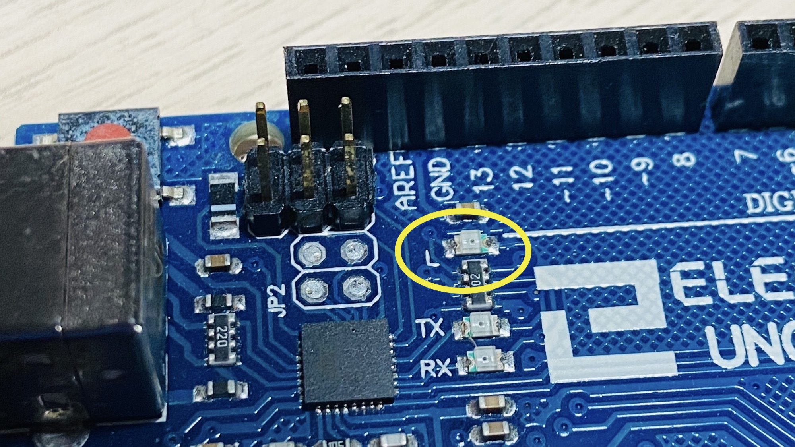
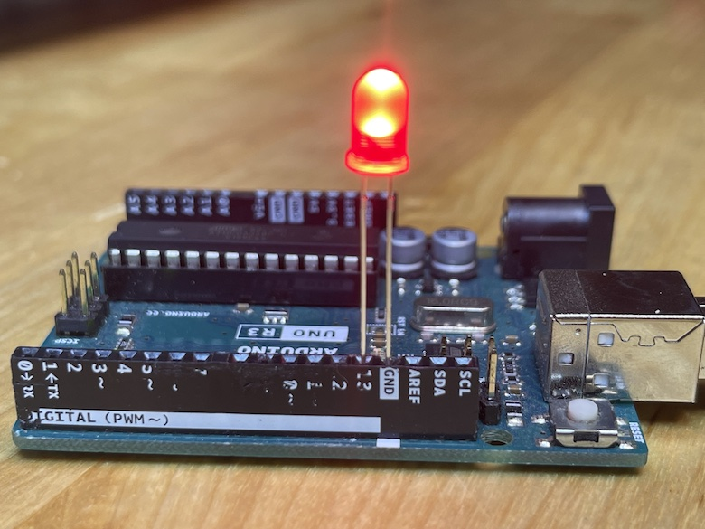
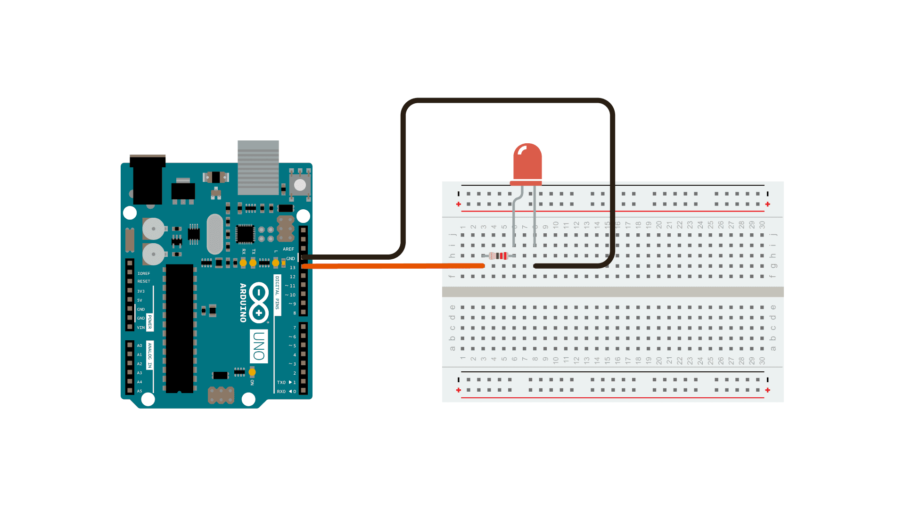

This is considered the “hello world” of Arduino programming. It is good to start with and to test that your Arduino is working because it does not need any extra electronics.
It takes advantage of the built-in LED on the Arduino. You can
program it right away. The LED has the letter L next to
it.

From Arduino “Examples”:
Go to the menu bar:
File -> Examples -> 01.Basics -> Blink
void setup() {
// initialize digital pin LED_BUILTIN as an output.
pinMode(LED_BUILTIN, OUTPUT); // also can be pinMode(13, OUTPUT);
}
// the loop function runs over and over again forever
void loop() {
digitalWrite(LED_BUILTIN, HIGH); // turn the LED on (HIGH is the voltage level)
delay(1000); // wait for a second
digitalWrite(LED_BUILTIN, LOW); // turn the LED off by making the voltage LOW
delay(1000); // wait for a second
}void setup() {};
void setup() {
pinMode(LED_BUILTIN, OUTPUT);
}From the Arduino Programming Notebook:
The setup() function is called once when your program starts. Use it to initialize pin modes, or begin serial. It must be included in a program even if there are no statements to run.
pinMode(LED_BUILTIN, OUTPUT);
Used in void setup() to configure a specified pin to behave either as an INPUT or an OUTPUT.
The variable LED_BUILTIN in this code is referencing pin
13, which is connected to the built-in LED.
void loop() {}
After calling the setup() function, the loop() function does precisely what its name suggests, and loops consecutively, allowing the program to change, respond, and control the Arduino board.
digitalWrite(LED_BUILTIN, HIGH);
These constants define pin levels as HIGH or LOW and are used when reading or writing to digital pins. HIGH is defined as logic level 1, ON, or 5 volts while LOW is logic level 0, OFF, or 0 volts.
delay(1000);
Pauses a program for the amount of time as specified in milliseconds, where 1000 equals 1 second.
If the code uploads to the Arduino successfully, the built-in LED should be turning on for one second, and turning off for one second repeatedly.
Try changing these values to something smaller, like 100 milliseconds:
void setup() {
pinMode(LED_BUILTIN, OUTPUT);
}
void loop() {
digitalWrite(LED_BUILTIN, HIGH);
delay(100); // wait for 100ms
digitalWrite(LED_BUILTIN, LOW);
delay(100); // wait for 100ms
}Uploading the code should result in a faster blinking LED.
You can connect a red LED directly to pin 13 and GND on the board like this:

This will blink the red LED in sync with the built-in LED. However, you should have a resistor connected in the circuit to prevent the red LED from burning out.
The actual wiring should look like this:

To answer why that is, check out this source: